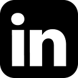
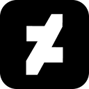

Jordan Durci
DurchBurch

I'm Jordan Durci: a computer science major at Allegheny college. I'm minoring in Psychology and Philosophy. My expected graduation date is May 2020. I'm the vice president of the campus's Legion of Allegheny Gamers, as well as the vice president for the college's Comics Club. For resume-style information, please refer to my LinkedIn, I keep it up-to-date. In this day and age, I think LinkedIn's successfully made traditional resume's obsolete, so I only write and update them as needed.
I run the DurchBurch channel, as well. There I stream twice a week, and upload occasional pre-recorded and edited content. My goal is mostly to have fun, but potentially make a little money on the side someday.
Links
Professional


Creative

